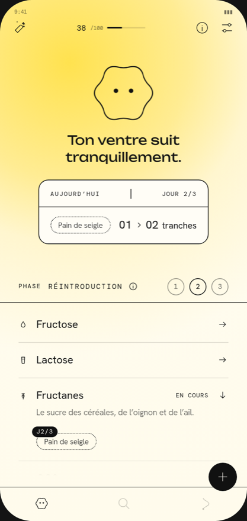

GutQuest
Le protocole FODMAP, aliment par aliment.

- Un catalogue de plus de 500 aliments et recettes.
- Gut vous assiste dans votre progression des phases de réintroduction du protocole FODMAP.
- Vos seuils personnels, lisibles et facilement repérables.
- Notez vos ressentis et symptômes associés à un aliment en quelques clics.
- Vos données de santé ne quittent pas votre téléphone.
Bientôt en téléchargement